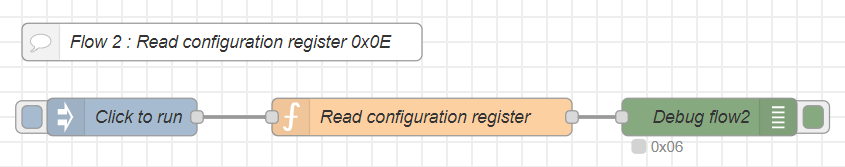
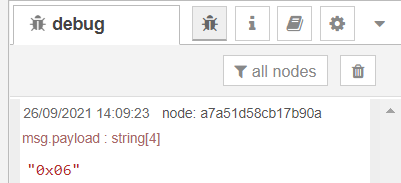

Programming the configuration register
Before we can read temperature and humidity we have to program the device behaviour. In this example we will program the sensor with the auto measurement disabled. In this mode of operation you have to trigger the reading via I2C commands.
So, let's see how to read and write to the configuration register 0x0E.
So, let´s see how to read and write to the configuration register 0x0E.
Reading the configuration register
A single function node with below code will do the magic:
const HDC2080_I2C = 0x40;
const hdc = i2c.openSync(1);
let r1 = hdc.readByteSync(HDC2080_I2C, 0x0E);
hdc.closeSync();
msg.payload = "0x" + r1.toString(16).padStart(2, '0');
return msg;
This code will open the I2C bus, read the value (8-bits) from register 0x0E and will close the bus. The result will be formated as a hexadecimal string and stored in msg.payload.
Below the flow for you to copy and import to Node-RED.
[{"id":"24d24b3f86e7d89a","type":"function","z":"ae40d2da42dfdbb2","name":"Read configuration register","func":"const HDC2080_I2C = 0x40;\n\nconst hdc = i2c.openSync(1);\nlet r1 = hdc.readByteSync(HDC2080_I2C, 0x0E);\nhdc.closeSync();\n\nmsg.payload = \"0x\" + r1.toString(16).padStart(2, '0');\nreturn msg;","outputs":1,"noerr":0,"initialize":"","finalize":"","libs":[{"var":"i2c","module":"i2c-bus"}],"x":420,"y":300,"wires":[["38ef03979f20bbe2"]]},{"id":"18e008a64c8ea4be","type":"inject","z":"ae40d2da42dfdbb2","name":"Click to run","props":[{"p":"payload"},{"p":"topic","vt":"str"}],"repeat":"","crontab":"","once":false,"onceDelay":0.1,"topic":"","payloadType":"date","x":180,"y":300,"wires":[["24d24b3f86e7d89a"]]},{"id":"e0fb19b67f1d56fd","type":"comment","z":"ae40d2da42dfdbb2","name":"Flow 2 : Read configuration register 0xE0","info":"","x":260,"y":240,"wires":[]},{"id":"38ef03979f20bbe2","type":"debug","z":"ae40d2da42dfdbb2","name":"Debug flow2","active":true,"tosidebar":true,"console":false,"tostatus":true,"complete":"payload","targetType":"msg","statusVal":"payload","statusType":"auto","x":650,"y":300,"wires":[]}]

and below what I got in the debug panel. When you run this flow for the first time sure enough you will see a different value.

Writing to the configuration register
We want to disable the auto measurement mode. For that purpose we have to write the value 0x06 to the configuration register.
The code is straightforward:
const HDC2080_I2C = 0x40;
const hdc = i2c.openSync(1);
hdc.writeByteSync(HDC2080_I2C, 0x0E, 0x06);
hdc.closeSync();
msg.payload = "0x06";
return msg;
Below the flow for you to copy and import to Node-RED.
[{"id":"2fce20d60bba3448","type":"comment","z":"ae40d2da42dfdbb2","name":"Flow 2 : Write configuration register 0x0E","info":"","x":260,"y":380,"wires":[]},{"id":"3baa31a1db1fb78d","type":"inject","z":"ae40d2da42dfdbb2","name":"Click to run","props":[{"p":"payload"},{"p":"topic","vt":"str"}],"repeat":"","crontab":"","once":false,"onceDelay":0.1,"topic":"","payloadType":"date","x":180,"y":440,"wires":[["3be881cfad1c8e09"]]},{"id":"3be881cfad1c8e09","type":"function","z":"ae40d2da42dfdbb2","name":"Write configuration register","func":"const HDC2080_I2C = 0x40;\n\nconst hdc = i2c.openSync(1);\nhdc.writeByteSync(HDC2080_I2C, 0x0E, 0x06);\nhdc.closeSync();\n\nmsg.payload = \"0x06\";\nreturn msg;","outputs":1,"noerr":0,"initialize":"","finalize":"","libs":[{"var":"i2c","module":"i2c-bus"}],"x":420,"y":440,"wires":[["322d01ab7757eba2"]]},{"id":"322d01ab7757eba2","type":"debug","z":"ae40d2da42dfdbb2","name":"Debug flow2","active":true,"tosidebar":true,"console":false,"tostatus":false,"complete":"payload","targetType":"msg","statusVal":"","statusType":"auto","x":650,"y":440,"wires":[]}]
Below what the flow looks like:

If you want to assure the value was correctly stored in the register you can run again the flow that reads the value from the register. There will be no surprises here.